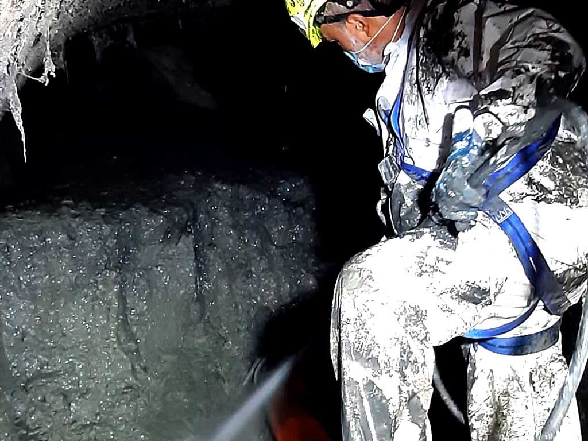
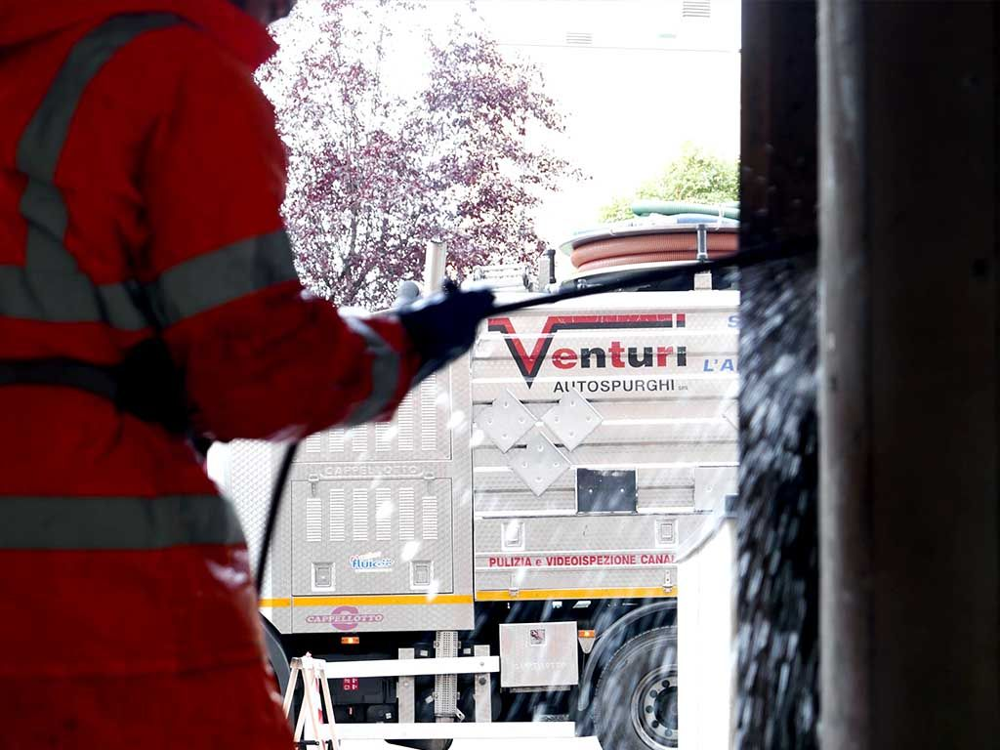

Anzola dell'Emilia BO dal 1960
Tecnologia al serviziodell'ecologia, dal 1960.
Tecnologia al servizio dell'ecologia, dal 1960
Richiedi un preventivo
La storia
66 anni sullo stesso territorio.

Nasce Venturi Autospurghi a Anzola dell'Emilia.
4 certificazioni e iscrizioni: ISO 9001, ISO 14001, ISO 45001, SOA.
Spurgo civile e industriale, Videoispezione, Risanamenti e relining, Bonifiche ambientali e amianto.
Servizi
Tutto il servizio, un interlocutore.
Per comuni, aziende e privati di BO.
Spurgo civile e industriale
Spurgo e pulizia di fosse, pozzetti e condotte, con mezzi attrezzati e smaltimento autorizzato di quanto aspirato.

Videoispezione
Ispezione delle condotte con telecamera: si vede il problema prima di scavare.
Risanamenti e relining
Spurgo e pulizia di fosse, pozzetti e condotte, con mezzi attrezzati e smaltimento autorizzato di quanto aspirato.

Bonifiche ambientali e amianto
Rimozione di coperture e manufatti in amianto con piano di lavoro, confinamento e smaltimento autorizzato.

Ricerca perdite
Ricerca guasti e interventi su tubazioni e scarichi, anche interrati.
Trasporto rifiuti pericolosi (cat. 9)
Gestione dei rifiuti pericolosi con mezzi e imballaggi a norma, dalla classificazione allo smaltimento.

Autogru e movimentazione macchinari
Spurgo e pulizia di fosse, pozzetti e condotte, con mezzi attrezzati e smaltimento autorizzato di quanto aspirato.

Come lavoriamo
Ogni passaggio, tracciato.
Fase 01
Chiamata
Ci dite dove e cosa: fossa, pozzetto, condotta, urgenza.
Fase 02
Sopralluogo
Valutiamo accesso, volumi e mezzo adatto.
Fase 03
Intervento
Aspirazione, lavaggio e, se serve, video-ispezione.
Fase 04
Trasporto
Il refluo va a un impianto autorizzato, con formulario.
Fase 05
Documenti
Vi restano i documenti di trasporto e smaltimento.
Certificazioni e iscrizioni
Dichiarate dall'azienda e consultabili su richiesta.
Lavora con noi
Autisti, operatori, tecnici: cerchiamo persone che conoscono il territorio.
Mandateci il vostro curriculum: lo leggiamo tutto, e vi richiamiamo.
Contatti
Un preventivo, senza giri.
Enti, aziende e privati: indicateci il servizio e la zona, vi rispondiamo con tempi e preventivo.